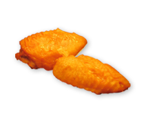
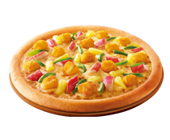

-
博世冰箱挑战赛
在日常生活中，一款冰箱的保鲜技术能力如何，这在很大程度上将直接影响食材的口感以及营养物质，所以保鲜保湿是影响冰箱贮藏食材的重要因素。而要验证冰箱的保鲜保湿的能力，我们可以利用冰箱内部的果蔬保鲜技术，通过对各类食材的保鲜保湿效果对比测试，直观体现出产品冷藏区的保鲜能力。
挑战视频

- 1
- 果蔬保鲜挑战
- 2
- 面膜保湿挑战
- 3
- 鱼生保鲜挑战
- 4
- 薯片酥脆挑战
博世冰箱特色
博世•维他鲜动力多门系列冰箱以其特有的维他保鲜pro和铂金净风系统，为消费者带来健康保鲜的全新升级体验。我们的每一步革新，都是基于消费者的真实需求，并想的更多、更远，致力于为他们提供至臻完美的健康解决方案。
消费选购知识
为什么要把冰箱的机身体积放在第一位呢？这是因为不少消费者在将冰箱买回家之后才发现根本放不下！你别笑话，这种粗心的人还真不少！尤其对于嵌入式橱柜，对冰箱的尺寸更是有着严格的要求。所以在买冰箱之前，一定要明确机身的尺寸，否则可能就要瞎折腾了。
-
选冰箱你最关心什么
据调查统计：30%的受访者家中是两门冰箱，有10%左右的人家中已经采购了多门冰箱，说明目前传统冰箱仍占据大部分家庭主流，但是越来越多需要更新换代或者高收入人群在采购冰箱的时候开始关注高端多门的产品。消费者最关注的冰箱问题是品牌，而空间、保鲜、价格、耗电情况紧随其后。
好物视频
-

新浪家居资讯中心
博世维他鲜动力多门冰箱 在高湿环境下保湿效果优异，有利于水果蔬菜等食材的日常保存。 在低湿环境下防潮效果突出，适合生鲜食材的保鲜和干货坚果类的储存。 *本次挑战均在博世维他鲜动力多门冰箱的维他保鲜室中操作
-
博世家电自创立以来，始终以现代家居生活的实际需求
为导向，通过创新的技术和令人惊喜、操作简便的解决
方案，实现出色的结果，为消费者打造健康轻松的家居
生活。高端的产品品质、精湛的工艺、经典的设计成就了博世
家电的高品质与可持续性的业务发展。优质服务获得了
消费者的信赖，印证了其“科技成就生活之美”的品牌理念。感谢BOSCH对本次体验大力支持